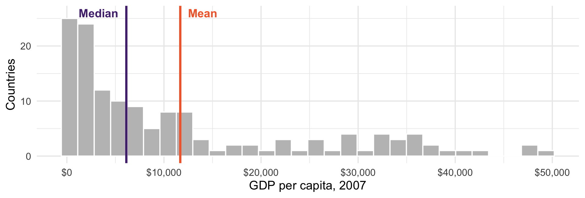
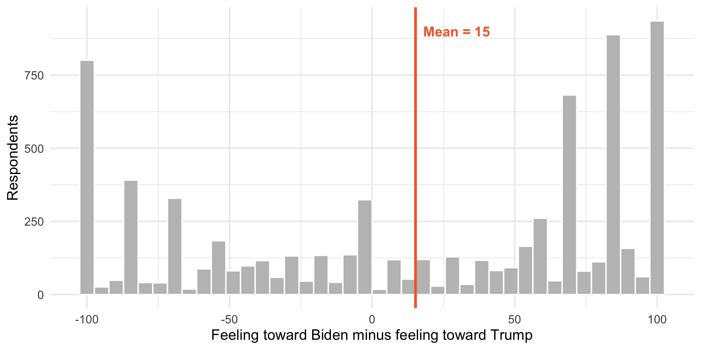
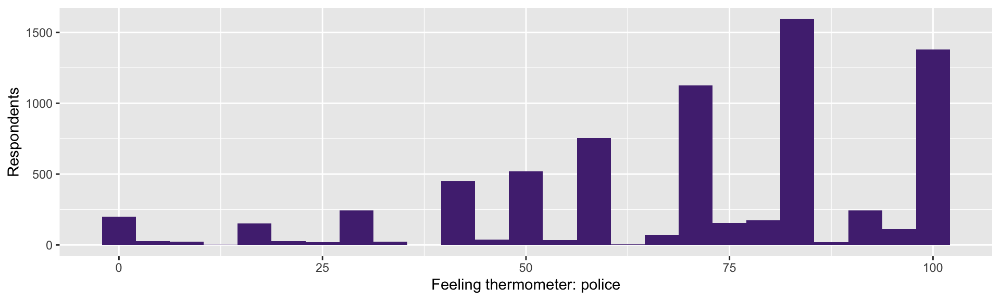
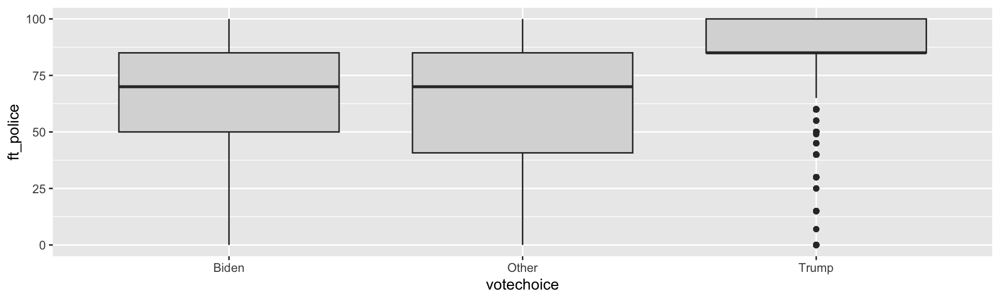
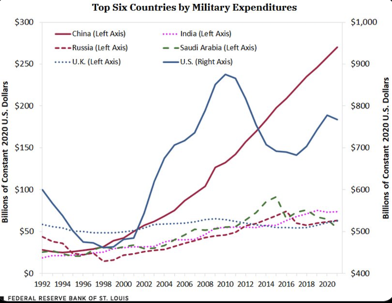

# A tibble: 1 × 2
mean_gdp median_gdp
<dbl> <dbl>
1 11680. 6124.POSC 8410: Describing Data
Measurement, distributions, and honest figures
Will Horne
Today
Where do numbers come from? (measurement)
How do we summarize one variable?
How do we summarize the relationship between two?
How do we draw it so a reader believes us?
This is the last session before probability theory.
Measurement
What Are We Even Measuring?
Nobody hands you a column called
democracyorpolarizationSomeone decided:
what the concept means
what counts as evidence of it
how to turn that evidence into a number
Every dataset you will ever use is the full of these judgment calls. Your job is to know what they are and how they matter.
Levels of Measurement
Nominal — categories, no order.
state,votechoiceOrdinal — ordered, but gaps are not equal. “Approve / Neutral / Disapprove”
Interval / Ratio — ordered, equal gaps.
ft_biden, GDP per capita
This determines what type of analysis you can perform.
Why Levels Matter
The mean of
stateis meaningless — there is no order to averageThe mean of an ordinal scale is questionable
Is the distance from “Disapprove” to “Neutral” the same as “Neutral” to “Approve”?
We do it anyway, constantly. Just know that you are assuming something.
Feeling thermometers are treated as interval. Is the gap from 0 to 10 really the same as 50 to 60?
Much of what looks like a statistics dispute is really a measurement dispute.
Validity and Reliability
Reliable — you get the same answer when you measure again
Valid — you are measuring the thing you claim to measure
A bathroom scale that reads 5 pounds heavy is reliable but not valid
A scale that gives a different number every time is neither
You can have reliability without validity. You cannot have validity without reliability.
Adcock and Collier make the case that measurement validity is a standard qualitative work is held to as well.
A Hard Case: Measuring Democracy
Several major projects score how democratic countries are — V-Dem, Polity, Freedom House
They use different definitions, different coders, different rules
They disagree about specific countries in specific years
That disagreement is normal when you measure a contested concept. But if your finding flips depending on which index you use, you have learned something important.
Munck and Verkuilen (2002, CPS) compare the major indices directly. Not assigned, but if you are interested in democratization you will read it eventually.
Describing One Variable
Three Questions
For any variable, ask:
Center — what is a typical value?
Spread — how much do cases differ?
Shape — what does the distribution look like?
Most people report the first, sometimes the second, and almost never look at the third. We will cover how to evaluate all three.
Center
Mean — add them up, divide by n. \(\bar{x} = \frac{1}{n}\sum x_i\)
Median — the middle value when sorted
Mode — the most common value
These agree when the distribution is symmetric. When it is not, they can tell very different stories.
What the Mean Obscures
GDP per capita across 142 countries, 2007:
The mean is nearly twice the median.
Which Countries Are “Above Average”?
# A tibble: 1 × 2
n_countries above_mean
<int> <int>
1 142 47Only 47 of 142 countries are above the average. Two-thirds of the world is “below average,” which should tell you the average is not describing a typical country.
The Picture

A long right tail drags the mean away from the bulk of the data.
So Which Should You Report?
Skewed data — the median is usually the honest summary
- This is why you always hear “median household income,” more than “mean household income”
The mean is not wrong, it just answers a different question
Mean = “if we divided the total equally”
Median = “the typical case”
Report both when they disagree.
Spread
Two groups can share a mean and be nothing alike.
Range — max minus min. Determined entirely by two observations.
IQR — the middle 50%. Ignores the tails.
Variance — average squared distance from the mean
Standard deviation — the square root of the variance
Variance and Standard Deviation
\[s^2 = \frac{1}{n-1}\sum_{i=1}^{n}(x_i - \bar{x})^2 \qquad s = \sqrt{s^2}\]
We square the deviations so positives and negatives don’t cancel
Squaring also means outliers count heavily
The square root puts us back in interpretable units
Why \(n-1\) and not \(n\)? We will answer this in a few weeks. For now: it corrects a bias.
Shape
Symmetric — mean ≈ median
Right-skewed — long tail to the right, mean > median (income, GDP, campaign donations)
Left-skewed — long tail left, mean < median (life expectancy, exam scores)
Bimodal — two humps
Bimodality Is a Finding
anes |>
summarise(mean_gap = mean(affect_gap, na.rm = TRUE),
median_gap = median(affect_gap, na.rm = TRUE),
sd_gap = sd(affect_gap, na.rm = TRUE))# A tibble: 1 × 3
mean_gap median_gap sd_gap
<dbl> <dbl> <dbl>
1 15.2 40 72.3Mean 15, median 40, standard deviation 72. What does this tell us?
Look At It

The mean sits in the valley between the two groups, where almost nobody is.
A mean and a standard deviation summarize a distribution; they do not replace it. Here the “average American” is an artifact - the electorate is two clumps. Always plot before you summarize.
Visualizing Distributions
Histograms

Bin width is a choice. Too few bins hides structure; too many shows noise. Try several.
Boxplots Compare Groups

Box = middle 50%, line = median, whiskers = most of the rest, dots = outliers.
You Try (1)
Compute the mean, median, and standard deviation of
ft_blmPlot its distribution using a histogram. Is it skewed? Bimodal?
Make a boxplot of
ft_blmbyvotechoiceWhich group has more internal disagreement? How can you tell from the box?
Making Good Figures
What Is the Goal?
We want to convey information to the reader
clearly
efficiently
as simply as possible
A figure is an argument. The reader shouldn’t have to strain to figure it out.
Some Basic Rules
The outcome or dependent variable goes on the Y axis
The key independent variable goes on the X axis
Think carefully about axes. Use a single scale, with sensible values.
Label everything. Rename variables so a reader who has never seen your data understands.
More Rules
Use colorblind-friendly palettes
Roughly 1 in 12 men has some form of color vision deficiency
palette.colors()gives you good ones for free
As a general rule:
No pie charts — humans compare angles badly
No 3D. It adds distortion and no information.
To track several groups at once, consider faceting instead of more colors
Examples of Bad Graphics


Another Bad Graphic

A Better Graphic

The Y-Axis Question
Bar charts should almost always start at zero
- the bar’s length is the information
Line charts of trends often should not
- forcing zero can hide the story
Neither rule is absolute.
Rule of thumb: would you make the same axis choice if the result went the other way?
Describing Two Variables
Cross-Tabs
For two categorical variables, count the combinations.
Raw Counts Mislead
There are more Biden voters in the sample, so of course they have bigger numbers. Convert to percentages within each group:
anes |>
filter(!is.na(votechoice), votechoice != "Other", !is.na(tax_rich)) |>
count(votechoice, tax_rich) |>
group_by(votechoice) |>
mutate(pct = round(100 * n / sum(n), 1)) |>
select(-n) |>
pivot_wider(names_from = tax_rich, values_from = pct)# A tibble: 2 × 4
# Groups: votechoice [2]
votechoice Favor Neutral Oppose
<chr> <dbl> <dbl> <dbl>
1 Biden 88.2 7.1 4.7
2 Trump 37.7 30.9 31.3Which Percentage?
We just computed “among Biden voters, what share favor the policy?”
We could have computed “among policy supporters, what share voted Biden?”
These are different numbers and answer different questions
Getting this backwards is one of the most common errors in published tables. We will formalize as confusing \(P(A|B)\) with \(P(B|A)\).
Conditional Means
For a categorical variable and a continuous one, compute the mean within each group:
anes |>
filter(!is.na(votechoice)) |>
group_by(votechoice) |>
summarise(n = n(),
mean_police = mean(ft_police, na.rm = TRUE),
sd_police = sd(ft_police, na.rm = TRUE))# A tibble: 3 × 4
votechoice n mean_police sd_police
<chr> <int> <dbl> <dbl>
1 Biden 3267 62.2 24.4
2 Other 151 61.6 27.2
3 Trump 2463 85.3 16.7A 23-point gap in average warmth — and Trump voters are also far more homogeneous (sd 16.7 against 24.4). The second fact is as interesting as the first, and reporting only means would have hidden it.
This Is Where We Are Going
“The mean of Y, within levels of X” has a name: the conditional expectation function
You just computed one by hand with
group_by()Regression is a machine for estimating conditional means — including when X is continuous, and when there are several X’s at once
Everything between here and ~Week 11 exists to let us do this with uncertainty attached.
For Next Time
Problem Set 1 is due next week. It needs to render.
We start probability next time
- Read chapter 1 of Probability!